How Gulf hurricanes and US winter storms move oil and gas prices, and whether risk models see them coming · EIA data to 2026-09-22 · generated 2026-09-28
bash run.sh re-downloads the official files.Hurricanes come from NOAA's best-track database (HURDAT2): a storm counts if it is at hurricane strength (at least 64 knots) while inside the northern Gulf box 25.5-30.5°N, 98.0-86.0°W, which covers the federal offshore oil and gas fields and the Texas-to-Alabama refining coast. Day 0 is the first date it is there. Winter storms come from NOAA NCEI's billion-dollar disaster list: every "Winter Storm" or "Freeze" that began between November and March, with episodes less than a week apart merged. Day 0 is the first trading day on or after the event date.
| Hazard | Source | Data through | Events | Rule |
|---|---|---|---|---|
| hurricane | https://raw.githubusercontent.com/tidyverse/dplyr/main/data-raw/storms.csv | 2024-11-18 | 19 | status HU, >= 64 kt, lat (25.5, 30.5), lon (-98.0, -86.0) |
| winter | bundled snapshot of NCEI events-US-1980-2024.csv | 2024-01-14 | 12 | Winter Storm or Freeze, starting in months (11, 12, 1, 2, 3), merged within 7 days |
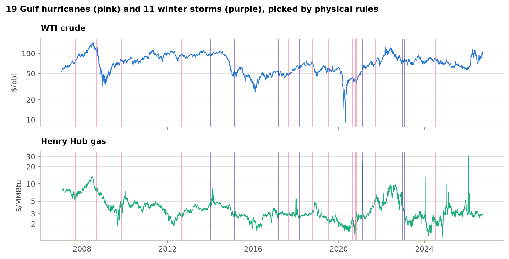
| Event | Hazard | Date | Day 0 | Detail |
|---|---|---|---|---|
| Humberto 2007 | Gulf hurricane | 2007-09-13 | 2007-09-13 | max 80 kt in the Gulf box, 3 six-hourly fixes |
| Dolly 2008 | Gulf hurricane | 2008-07-23 | 2008-07-23 | max 85 kt in the Gulf box, 6 six-hourly fixes |
| Gustav 2008 | Gulf hurricane | 2008-08-31 | 2008-09-02 | max 95 kt in the Gulf box, 6 six-hourly fixes |
| Ike 2008 | Gulf hurricane | 2008-09-11 | 2008-09-11 | max 95 kt in the Gulf box, 10 six-hourly fixes |
| Ida 2009 | Gulf hurricane | 2009-11-09 | 2009-11-09 | max 75 kt in the Gulf box, 2 six-hourly fixes |
| Winter storm Feb 2010 | Winter storm / freeze | 2010-02-09 | 2010-02-09 | NCEI billion-dollar event, Feb 09-Feb 11 2010 |
| Winter storm Feb 2011 | Winter storm / freeze | 2011-02-01 | 2011-02-01 | NCEI billion-dollar event, Feb 01-Feb 03 2011 |
| Isaac 2012 | Gulf hurricane | 2012-08-28 | 2012-08-28 | max 70 kt in the Gulf box, 7 six-hourly fixes |
| Winter storm Jan 2014 | Winter storm / freeze | 2014-01-05 | 2014-01-06 | NCEI billion-dollar event, Jan 05-Jan 08 2014 |
| Winter storm Feb 2015 | Winter storm / freeze | 2015-02-14 | 2015-02-16 | NCEI billion-dollar event, Feb 14-Feb 20 2015 |
| Freeze Mar 2017 | Winter storm / freeze | 2017-03-14 | 2017-03-14 | NCEI billion-dollar event, Mar 14-Mar 16 2017 |
| Harvey 2017 | Gulf hurricane | 2017-08-25 | 2017-08-25 | max 115 kt in the Gulf box, 7 six-hourly fixes |
| Nate 2017 | Gulf hurricane | 2017-10-07 | 2017-10-09 | max 80 kt in the Gulf box, 4 six-hourly fixes |
| Winter storm Jan 2018 | Winter storm / freeze | 2018-01-03 | 2018-01-03 | NCEI billion-dollar event, Jan 03-Jan 05 2018 |
| Winter storm Mar 2018 | Winter storm / freeze | 2018-03-01 | 2018-03-01 | NCEI billion-dollar event, Mar 01-Mar 03 2018 |
| Michael 2018 | Gulf hurricane | 2018-10-09 | 2018-10-09 | max 125 kt in the Gulf box, 4 six-hourly fixes |
| Barry 2019 | Gulf hurricane | 2019-07-13 | 2019-07-15 | max 65 kt in the Gulf box, 2 six-hourly fixes |
| Hanna 2020 | Gulf hurricane | 2020-07-25 | 2020-07-27 | max 80 kt in the Gulf box, 5 six-hourly fixes |
| Laura 2020 | Gulf hurricane | 2020-08-26 | 2020-08-26 | max 130 kt in the Gulf box, 5 six-hourly fixes |
| Sally 2020 | Gulf hurricane | 2020-09-14 | 2020-09-14 | max 95 kt in the Gulf box, 10 six-hourly fixes |
| Delta 2020 | Gulf hurricane | 2020-10-09 | 2020-10-09 | max 105 kt in the Gulf box, 5 six-hourly fixes |
| Zeta 2020 | Gulf hurricane | 2020-10-28 | 2020-10-28 | max 100 kt in the Gulf box, 4 six-hourly fixes |
| Winter storm Feb 2021 | Winter storm / freeze | 2021-02-10 | 2021-02-10 | NCEI billion-dollar event, Feb 10-Feb 19 2021 |
| Ida 2021 | Gulf hurricane | 2021-08-28 | 2021-08-30 | max 130 kt in the Gulf box, 7 six-hourly fixes |
| Nicholas 2021 | Gulf hurricane | 2021-09-14 | 2021-09-14 | max 65 kt in the Gulf box, 3 six-hourly fixes |
| Winter storm Dec 2022 | Winter storm / freeze | 2022-12-21 | 2022-12-21 | NCEI billion-dollar event, Dec 21-Dec 26 2022 |
| Winter storm Feb 2023 | Winter storm / freeze | 2023-02-02 | 2023-02-02 | NCEI billion-dollar event, Feb 02-Feb 05 2023 |
| Winter storm Jan 2024 | Winter storm / freeze | 2024-01-12 | 2024-01-12 | NCEI billion-dollar event, Jan 12-Jan 18 2024 |
| Beryl 2024 | Gulf hurricane | 2024-07-08 | 2024-07-08 | max 80 kt in the Gulf box, 3 six-hourly fixes |
| Francine 2024 | Gulf hurricane | 2024-09-11 | 2024-09-11 | max 90 kt in the Gulf box, 6 six-hourly fixes |
For each event, the normal return is the average over trading days -250 to -21. Abnormal returns are deviations from it, summed into a cumulative abnormal return (CAR) for direction. Abnormal volatility compares the ten days after day 0 with the month before, for size. Each average is tested three ways: a t-test across events, a sign test, and a placebo that repeats the calculation on 5,000 random sets of dates from the same calendar months with no event within 30 trading days. Benjamini-Hochberg q-values control the false-discovery rate across the 16 primary tests.
| Hazard | Series | Measure | Events | Placebo | t-test p | Placebo p | q (FDR) |
|---|---|---|---|---|---|---|---|
| Gulf hurricane | WTI crude | Full CAR | -2.21% | -0.71% | 0.328 | 0.430 | 0.845 |
| Gulf hurricane | WTI crude | Abnormal volatility | 0.99x | 0.96x | 0.917 | 0.751 | 0.869 |
| Gulf hurricane | Brent crude | Full CAR | -2.56% | -0.46% | 0.308 | 0.260 | 0.693 |
| Gulf hurricane | Brent crude | Abnormal volatility | 0.93x | 0.95x | 0.477 | 0.787 | 0.869 |
| Gulf hurricane | Henry Hub gas | Full CAR | +6.31% | -1.11% | 0.200 | 0.028 | 0.221 |
| Gulf hurricane | Henry Hub gas | Abnormal volatility | 1.19x | 1.05x | 0.261 | 0.174 | 0.653 |
| Gulf hurricane | Brent - WTI spread | Full CAR | -0.35% | +0.25% | 0.663 | 0.454 | 0.845 |
| Gulf hurricane | Brent - WTI spread | Abnormal volatility | 1.01x | 0.98x | 0.914 | 0.753 | 0.869 |
| Winter storm / freeze | WTI crude | Full CAR | +0.57% | +2.09% | 0.808 | 0.642 | 0.869 |
| Winter storm / freeze | WTI crude | Abnormal volatility | 0.96x | 1.05x | 0.501 | 0.581 | 0.869 |
| Winter storm / freeze | Brent crude | Full CAR | +2.84% | +2.17% | 0.283 | 0.950 | 0.950 |
| Winter storm / freeze | Brent crude | Abnormal volatility | 0.90x | 1.06x | 0.235 | 0.204 | 0.653 |
| Winter storm / freeze | Henry Hub gas | Full CAR | -9.34% | -4.77% | 0.307 | 0.476 | 0.845 |
| Winter storm / freeze | Henry Hub gas | Abnormal volatility | 1.58x | 0.81x | 0.292 | 0.005 | 0.077 |
| Winter storm / freeze | Brent - WTI spread | Full CAR | +2.26% | +0.08% | 0.160 | 0.176 | 0.653 |
| Winter storm / freeze | Brent - WTI spread | Abnormal volatility | 0.98x | 0.95x | 0.853 | 0.815 | 0.869 |
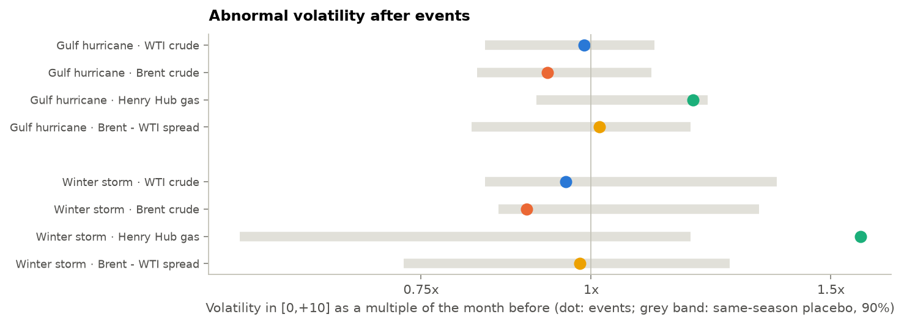
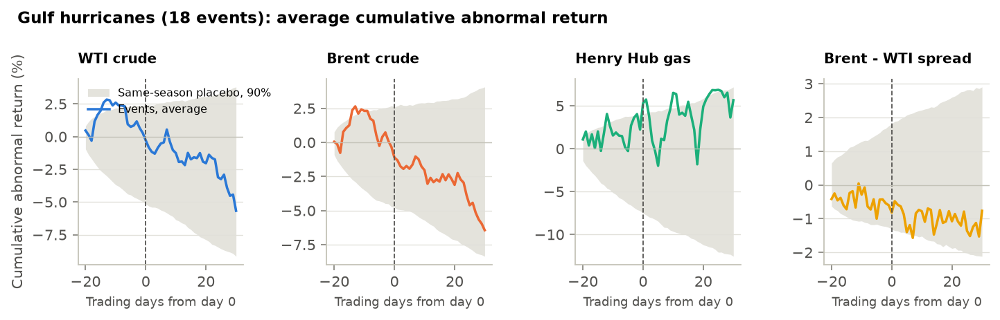
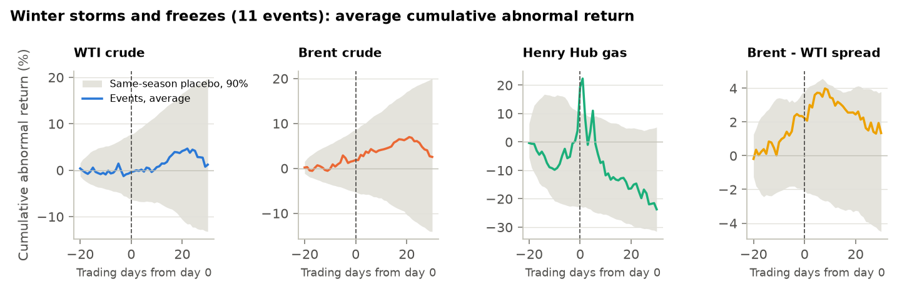
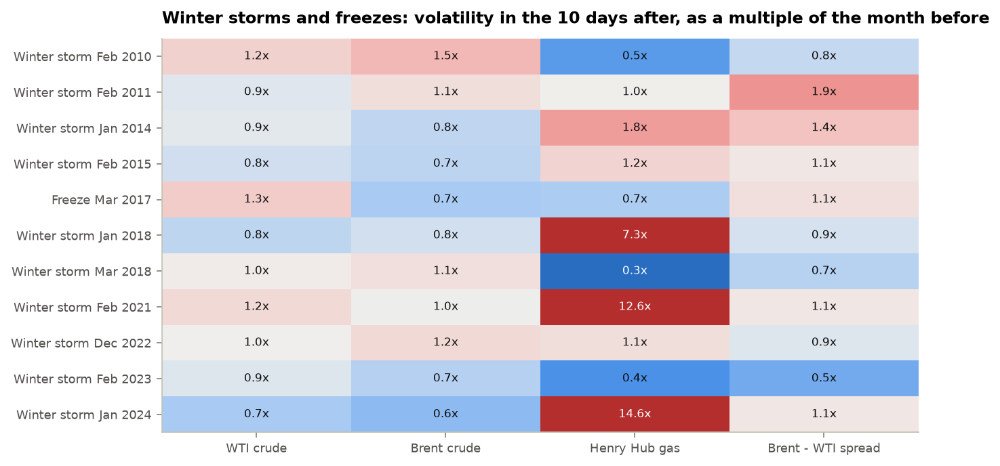
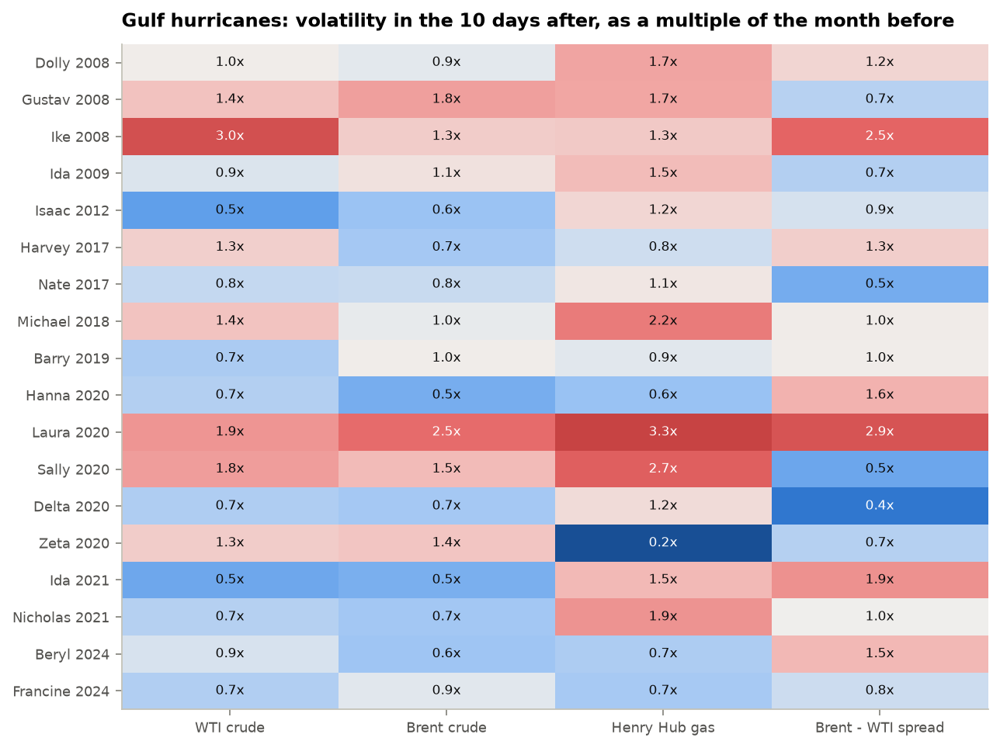
regime_risk's two-state Markov-switching model is fitted on 2007-2014 only, then run forward as a real-time Hamilton filter with fixed parameters. The shift is the average probability of the turbulent regime over days 1 to +10 minus days -15 to -6, for events after the training period.
| Series | Calm vol | Turbulent vol | Calm spell (days) | Turbulent spell (days) |
|---|---|---|---|---|
| WTI crude | 25% | 77% | 79 | 13 |
| Brent crude | 21% | 53% | 48 | 18 |
| Henry Hub gas | 42% | 155% | 67 | 8 |
| Brent - WTI spread | 20% | 67% | 38 | 8 |
| Hazard | Series | Events | Shift | Placebo shift | p | q (FDR) |
|---|---|---|---|---|---|---|
| Gulf hurricane | WTI crude | 13 | +0.04 | −0.04 | 0.253 | 0.517 |
| Winter storm / freeze | WTI crude | 8 | −0.03 | +0.08 | 0.241 | 0.517 |
| Gulf hurricane | Brent crude | 13 | +0.06 | −0.04 | 0.259 | 0.517 |
| Winter storm / freeze | Brent crude | 8 | −0.02 | +0.04 | 0.551 | 0.682 |
| Gulf hurricane | Henry Hub gas | 13 | +0.01 | +0.04 | 0.559 | 0.682 |
| Winter storm / freeze | Henry Hub gas | 8 | +0.28 | −0.07 | <0.001 | 0.003 |
| Gulf hurricane | Brent - WTI spread | 13 | −0.04 | −0.02 | 0.682 | 0.682 |
| Winter storm / freeze | Brent - WTI spread | 8 | −0.03 | +0.02 | 0.635 | 0.682 |
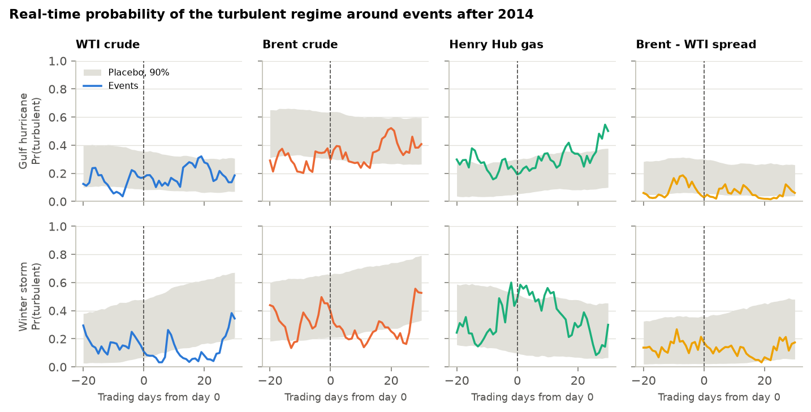
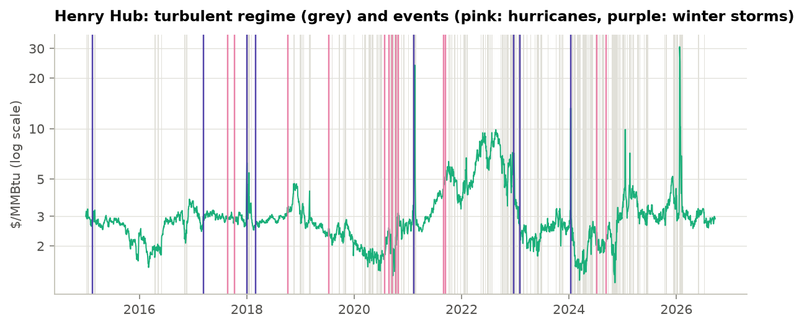
Three 99% one-day VaR models from regime_risk and climrisk.overlay forecast every day from 2010 using data up to the day before: historical simulation (500 days), filtered HS (EWMA 0.94) and GARCH(1,1)-t re-estimated every 250 days. A storm's risk window runs from -2 to +10 trading days around day 0 (hurricane and winter-storm watches give about two days' warning). The overlay multiplies VaR inside a window by k, the ratio of realised to model-implied volatility in earlier storms of the same kind (only days before the window opens), capped at 3 and switched on after 2 past events.
| Position | Model | All days | Storm windows | Other days | Fisher p | Storm breaches, then with overlay | Extra avg VaR |
|---|---|---|---|---|---|---|---|
| Book | Historical sim | 1.05% | 2.48% | 0.94% | 0.018 | 8 -> 6 | 2.4% |
| Book | Filtered HS | 0.98% | 1.55% | 0.94% | 0.209 | 5 -> 2 | 1.1% |
| Book | GARCH-t | 1.17% | 1.86% | 1.12% | 0.174 | 6 -> 2 | 1.4% |
| Long WTI | Historical sim | 1.31% | 0.31% | 1.39% | 0.988 | 1 -> 1 | 0.0% |
| Long WTI | Filtered HS | 1.05% | 0.62% | 1.09% | 0.866 | 2 -> 2 | 0.0% |
| Long WTI | GARCH-t | 1.29% | 0.62% | 1.34% | 0.929 | 2 -> 2 | 0.0% |
| Long Henry Hub | Historical sim | 1.08% | 3.41% | 0.89% | <0.001 | 11 -> 9 | 5.5% |
| Long Henry Hub | Filtered HS | 0.87% | 1.24% | 0.84% | 0.306 | 4 -> 3 | 1.9% |
| Long Henry Hub | GARCH-t | 0.87% | 1.24% | 0.84% | 0.306 | 4 -> 2 | 2.0% |
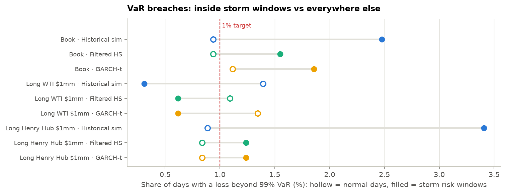
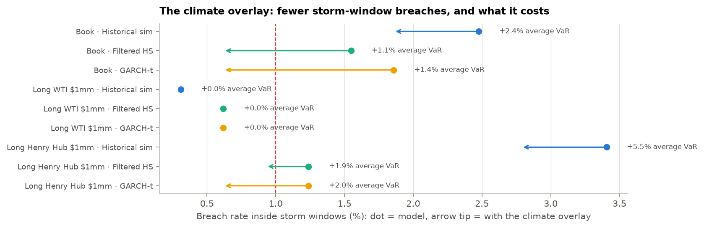
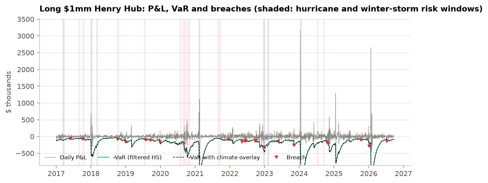
Each event's actual 13-day price changes (day -2 to +10) applied to today's positions: +$4mm WTI, -$2mm Brent, +$2mm HenryHub for the book. The 10-day VaR is the square-root-of-time scaling of today's one-day filtered-HS VaR.
| Position | 10-day 99% VaR | Worst climate scenario | Event | Scenarios beyond VaR | Worst 13 days, any cause | Ending |
|---|---|---|---|---|---|---|
| Book | $850k | −$893k | Winter storm Dec 2022 | 1 of 30 | −$1.73mm | 2020-03-30 |
| Long WTI $1mm | $249k | −$226k | Gustav 2008 | 0 of 30 | −$588k | 2020-03-20 |
| Long Henry Hub $1mm | $272k | −$483k | Winter storm Dec 2022 | 2 of 30 | −$894k | 2026-02-11 |
| Event | WTI | Brent | Henry Hub | Book P&L | x 10-day VaR |
|---|---|---|---|---|---|
| Winter storm Dec 2022 | -0.6% | -4.7% | -48.3% | −$893k | -1.05 |
| Gustav 2008 | -22.6% | -24.1% | -9.1% | −$605k | -0.71 |
| Ida 2009 | -4.7% | -0.1% | -15.6% | −$500k | -0.59 |
| Dolly 2008 | -8.0% | -11.5% | -17.5% | −$441k | -0.52 |
| Winter storm Feb 2011 | -1.6% | +6.2% | -11.1% | −$409k | -0.48 |
| Laura 2020 | -10.1% | -9.0% | -7.5% | −$374k | -0.44 |
| Winter storm Jan 2024 | +8.3% | +6.9% | -27.4% | −$353k | -0.42 |
| Michael 2018 | -10.7% | -8.6% | -3.2% | −$320k | -0.38 |
| Barry 2019 | -5.7% | -6.2% | -10.4% | −$312k | -0.37 |
| Winter storm Feb 2015 | +1.6% | +13.6% | -2.4% | −$256k | -0.30 |
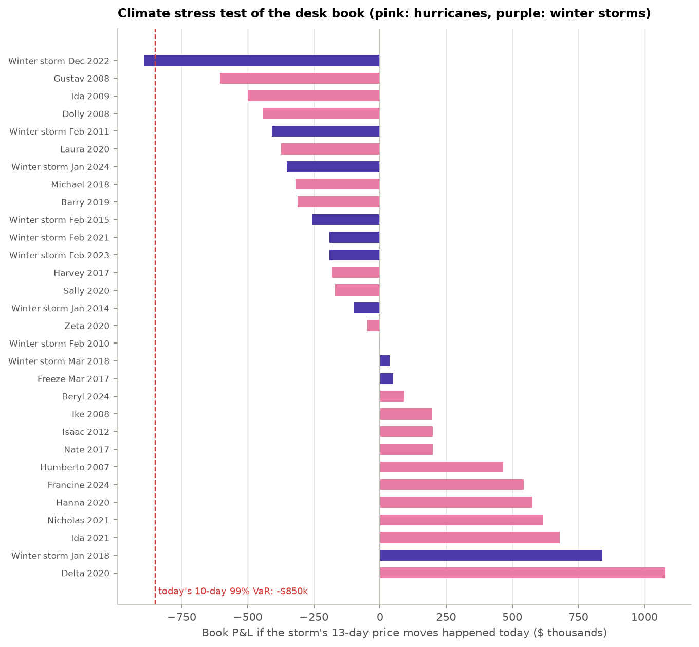
regime_risk (regime-risk 1.0.0 (installed package)), the tested library of github.com/n9omi/regime-risk-and-model-validation; this project adds only the event logic, the event study and the overlay.